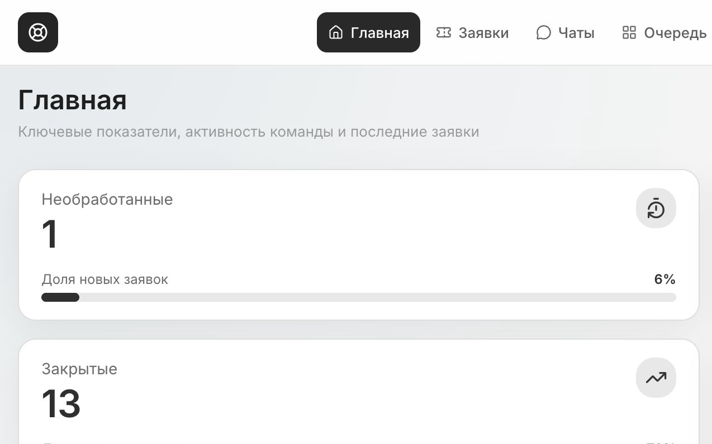
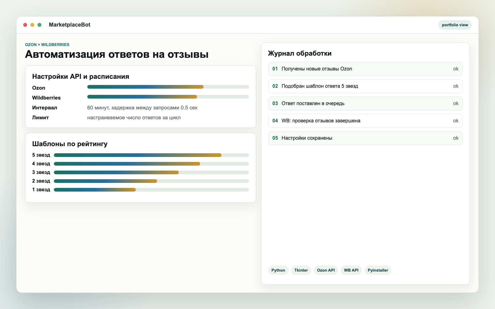
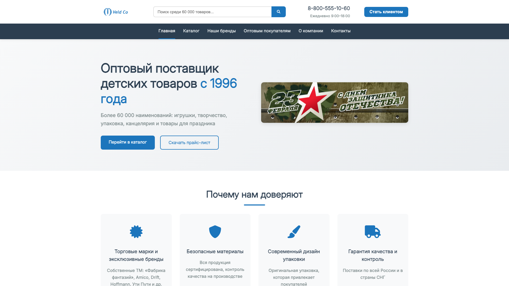
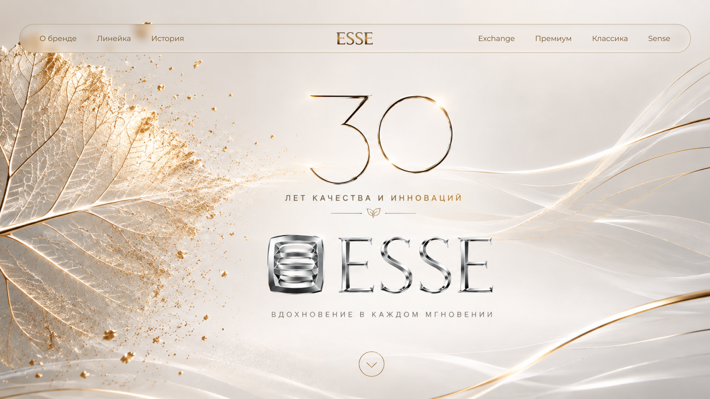
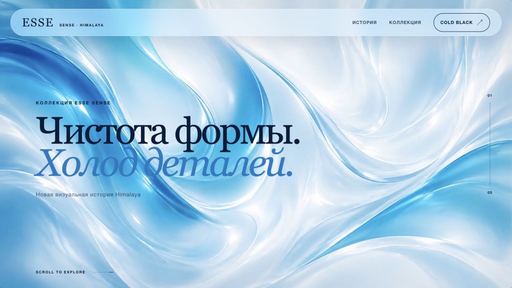
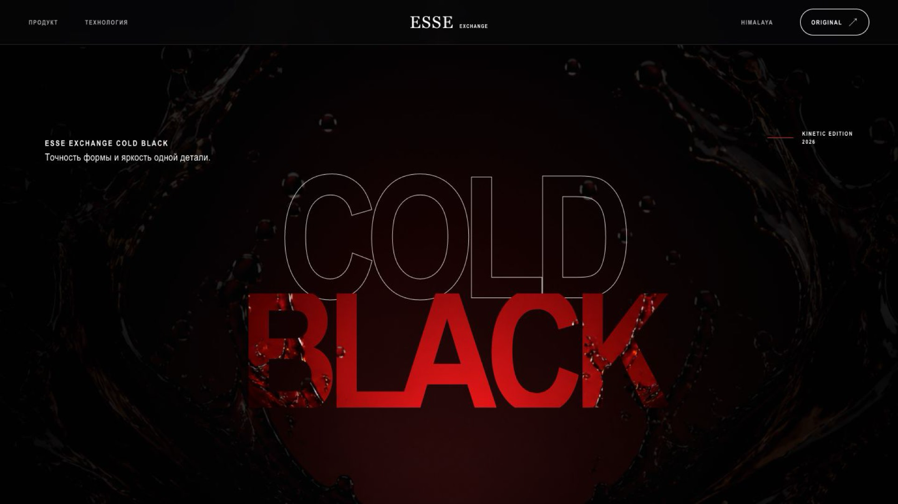
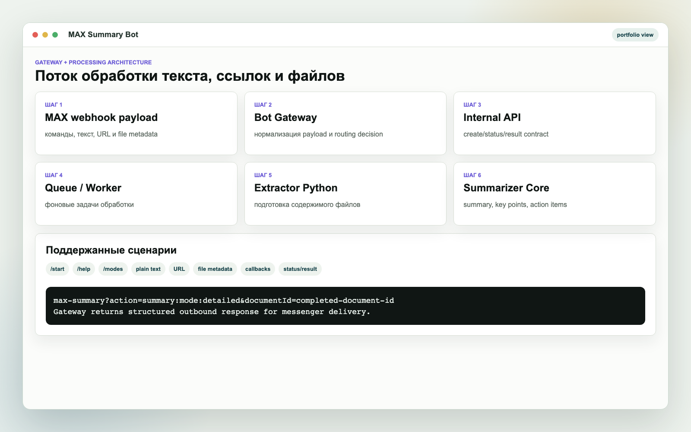
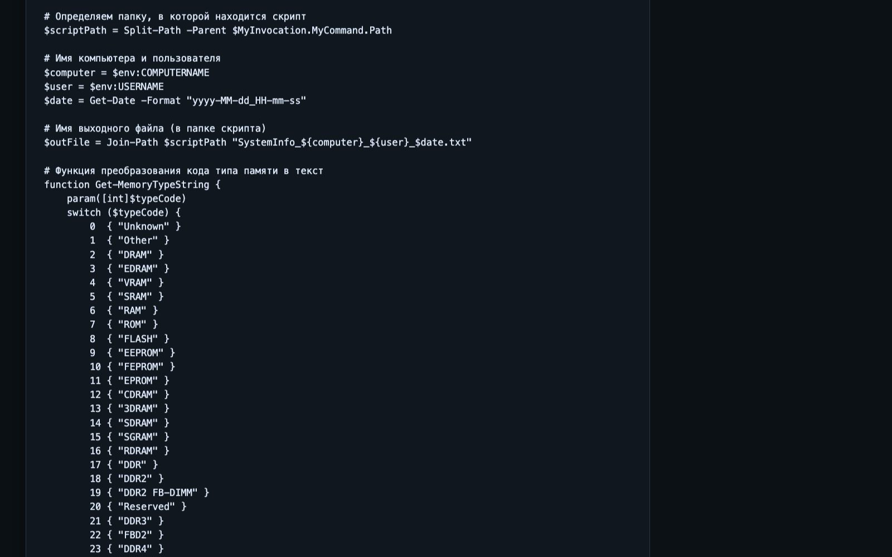
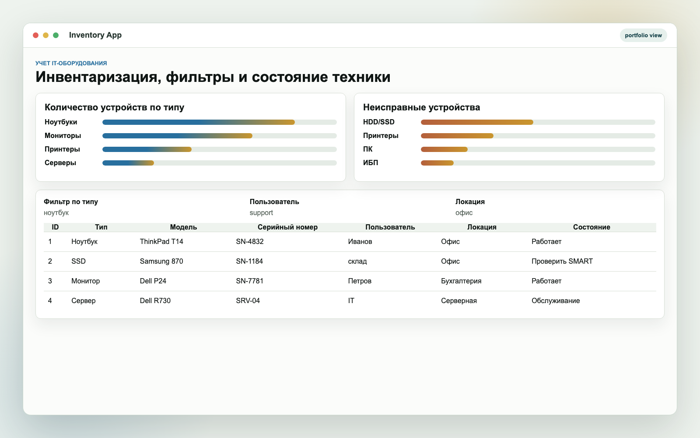

Главные проекты
Кейсы, которые показывают коммерческую пользу и личный вклад

Открыть полный скринOffice ServiceDesk
Внутренняя система управления заявками, которую используют три компании.
Задача
Обращения сотрудников поступали через мессенджеры, почту и внешние helpdesk-сервисы. Заявки было сложно распределять, отслеживать и контролировать.
Решение
Разработал единый портал с очередями исполнителей, базой знаний, комментариями, вложениями, email-интеграцией, ролями доступа, уведомлениями и административной панелью.
Моя роль
Анализ рабочих процессов, проектирование архитектуры и базы данных, frontend- и backend-разработка, интеграции, тестирование, развёртывание и сопровождение.
Результат
Система помогает централизованно регистрировать, распределять и обрабатывать внутренние обращения вместо разрозненных чатов.
ReactTypeScriptExpressPrismaPostgreSQLPlaywright



Открыть полный скринMarketplaceBot
Desktop-приложение и боты для автоматической обработки отзывов Ozon и Wildberries.
Задача
Сотрудникам приходилось вручную просматривать отзывы, выбирать шаблон ответа и повторять однотипные действия в маркетплейсах.
Решение
Собрал приложение с GUI, шаблонами ответов по рейтингу, расписанием обработки, хранением настроек, логированием и подготовкой Windows-сборки.
Моя роль
Проектирование сценариев, разработка Python-приложения, интеграции с API маркетплейсов, настройка сборки и проверка рабочих модулей.
Результат
Автоматизация маркетплейсов сократила объём ручной работы для трёх сотрудников и ускорила обработку повторяющихся отзывов.
PythonTkinterOzon APIWildberries APIPyInstaller

 Открыть полный скрин
Открыть полный скрин
AI Workbench
Локальная offline-first платформа для многоагентной разработки.
Задача
Нужно было ускорить проектную разработку: сохранять контекст задачи, формировать план, распределять работу между агентами и проверять результат.
Решение
Собрал платформу с локальным LLM-контуром, REST API, сохранением запусков, approval-механизмом и интерфейсом для управления задачами.
Моя роль
Архитектура продукта, backend, frontend, сценарии работы агентов, интеграция Ollama, хранение данных и проверки через pytest/Playwright.
Результат
Платформа принимает задачу, формирует план, распределяет этапы между агентными ролями, сохраняет историю выполнения и проверяет созданные приложения через API- и браузерные сценарии.
PythonFastAPIReactTypeScriptSQLiteOllama

Недавно разработанные сайты
Четыре сайта: коммерческий шаблон Veld Co и три ESSE-страницы с разным типом frontend-задач.

Открыть полный скринVeld Co template
Коммерческий сайт-шаблон для каталога детских товаров с главной страницей, категориями, карточками и базовой серверной частью.
Задача
Нужно было подготовить основу публичного сайта с каталогом, преимуществами, витриной товаров и возможностью дальнейшей настройки под бизнес.
Решение
Собрал адаптивные HTML/CSS-страницы, добавил структуру каталога, интерактивные элементы, Node.js server и SQL-схему для данных.
Моя роль
Верстка, структура страниц, базовый backend, подготовка репозитория, безопасные примеры настроек и документация запуска.
Результат
Кейс показывает умение быстро собрать коммерческий сайт под реальную нишу и оставить основу для развития проекта.
HTMLCSSJavaScriptNode.jsSQL

Открыть полный скринESSE — 30 лет качества и инноваций
Промо-сайт бренда с крупной типографикой, продуктовой линейкой и плавной frontend-анимацией.
Задача
Нужно было собрать выразительную страницу, которая сразу показывает продукт и ощущается как брендовая презентация, а не обычный шаблон.
Решение
Сверстал адаптивный лендинг, добавил продуктовые блоки, анимации появления, визуальные акценты и подготовил сборку на Vite.
Моя роль
Frontend-разработка, адаптив, работа с визуальными материалами, анимации, финальная сборка и проверка отображения.
Результат
Получилась аккуратная брендовая страница, которую можно показывать как пример коммерческого frontend и визуальной подачи продукта.
ViteJavaScriptCSSResponsiveAnimation

Открыть полный скринESSE Sense Himalaya
Иммерсивная scroll-страница с атмосферой, продуктовой линейкой и последовательными акцентами на деталях.
Задача
Нужно было показать продукт через последовательный визуальный сценарий с ощущением глубины и движения.
Решение
Собрал отдельную страницу с pinned-секциями, staged-анимациями, продуктовой линейкой и аккуратным fallback для мобильных экранов.
Моя роль
Frontend, GSAP-сценарии, responsive states, оптимизация ассетов, проверка scroll-поведения и кадров.
Результат
Страница показывает умение делать сложные промо-сценарии, где frontend работает как интерактивная презентация.
ViteGSAPJavaScriptCSSResponsive

Открыть полный скринCold Black Element
Кинетическая версия продуктовой страницы с акцентом на форму, контраст и технологичный разбор продукта.
Задача
Нужно было сделать более резкую и технологичную вариацию страницы, где продукт находится в центре первого экрана.
Решение
Собрал отдельный visual route с темной сценой, масками, продуктовой композицией, интерактивной линейкой и scroll-анимациями.
Моя роль
Верстка, CSS-маски, работа с изображениями, анимационная логика, адаптив и финальное визуальное QA.
Результат
Кейс усиливает портфолио по сайтам: показывает не только интерфейсы, но и умение делать дорогую визуальную подачу.
ViteGSAPCSS masksJavaScriptVisual QA
Чем могу быть полезен
Разрабатываю инструменты, которые закрывают конкретные рабочие задачи
Внутренние сервисы
Service Desk, CRM, таск-трекеры, административные панели, роли доступа, отчеты и рабочие кабинеты.
Автоматизация процессов
Скрипты, обработка файлов, регламентные задачи, сбор данных, отчеты и утилиты под конкретный рабочий процесс.
Боты и API-интеграции
Telegram/API-боты, интеграции с маркетплейсами, внутренние API, обработчики сообщений и фоновые очереди.
Frontend и backend
React-интерфейсы, REST API, базы данных, авторизация, серверная логика, проверки и подготовка к внедрению.
Опыт и база
Разработка плюс понимание IT-инфраструктуры
Системный администратор-программист
Поддержка пользователей и рабочих мест, диагностика Windows/Linux, автоматизация внутренних процессов, разработка служебных инструментов и сопровождение внедренных решений.
Независимый разработчик
Создание сайтов, внутренних сервисов, ботов, интеграций и прикладных утилит под задачи компаний, фрилансеров и небольших команд.
Среднее профессиональное образование
СПО по специальности «Программирование компьютерных систем». Средний балл диплома: 4,75 из 5.
Системное администрирование
Понимаю инфраструктуру, рабочие места и реальные ограничения пользователей
Поддержка рабочих мест
Помощь пользователям, первичная диагностика, настройка окружения, разбор типовых проблем Windows/Linux и рабочих приложений.
Сети и доступность
Понимание TCP/IP, DNS/DHCP, базовой маршрутизации, проверки доступности сервисов и поиска причин сетевых сбоев.
PowerShell и автоматизация
Скрипты для сбора информации о системе, диагностики, инвентаризации и сокращения повторяющихся админских действий.
Windows Server и виртуализация
Работа с Windows Server, VMware, VirtualBox и Bitrix-средой: тестовые стенды, окружения, сопровождение и разбор проблем.
Инвентаризация и оборудование
Учет IT-активов, подбор комплектующих, понимание серверного железа, накопителей, апгрейдов и базового обслуживания.
Диагностика и безопасность
HDD/SSD, SMART, перенос и первичное восстановление данных, Wireshark, OSINT-подход и аккуратная проверка гипотез.
Дополнительные проекты
Утилиты, боты и инструменты для прикладных задач

Открыть полный скринMAX Summary Bot
Бот для создания кратких выжимок из текста, ссылок и файлов.
Задача
Нужен был сервис, который принимает материалы из мессенджера, нормализует входные данные и возвращает структурированную выжимку.
Решение
Разделил messenger gateway и core-processing: gateway принимает payload, обращается к внутреннему API и возвращает единый формат ответа.
TypeScriptFastifypnpm workspacesBullMQPython extractor


Открыть полный скринSystemInfo
PowerShell-утилита для диагностики и инвентаризации Windows-рабочих станций.
Задача
Быстро получать сведения о системе без установки дополнительных программ и без прав администратора.
Решение
Собрал PowerShell-скрипт с WMI-запросами и понятным сценарием применения для IT-поддержки.
PowerShellWMIWindows

Открыть полный скринInventory App
Приложение для учета IT-оборудования и быстрых инвентаризационных задач.
Задача
Нужен был понятный инструмент для фиксации оборудования, поиска записей и поддержки порядка в IT-активах.
Решение
Собрал приложение для локального учета техники с понятной структурой данных и рабочим сценарием для IT-поддержки.
PythonSQLiteTkinterIT support

{kind=link}
{kind=link}
{kind=link}
{kind=link}
{kind=link}
{kind=link}
{kind=link}
{kind=link}
{kind=link}
{kind=link}
{kind=link}
{kind=link}
{kind=link}
{kind=link}
Стек
Основные технологии и дополнительные компетенции
Основной стек
PythonTypeScriptReactNode.jsFastAPIExpress/FastifyPostgreSQLSQLiteREST APIPrismaDockerPlaywrightOllama
Дополнительные компетенции
Не выношу это в основное позиционирование, но могу подключаться к задачам, где помогает опыт администрирования, анализа трафика, игровых движков и понимания железа.
PHPMySQLPowerShellWindows/LinuxWMITCP/IPDNS/DHCPVMwareVirtualBoxWindows ServerBitrixудаленная поддержкаинвентаризация оборудованияHDD/SSDSMARTсерверное оборудованиевосстановление данныхOSINTWiresharkHack The BoxUnityUnreal EngineC#подбор комплектующих ПК
Контакты
Открыт к работе и проектным задачам
Интересны задачи в области внутренних сервисов, автоматизации, API-интеграций и служебных приложений. Опишите задачу — помогу определить подход и оценить реализацию.